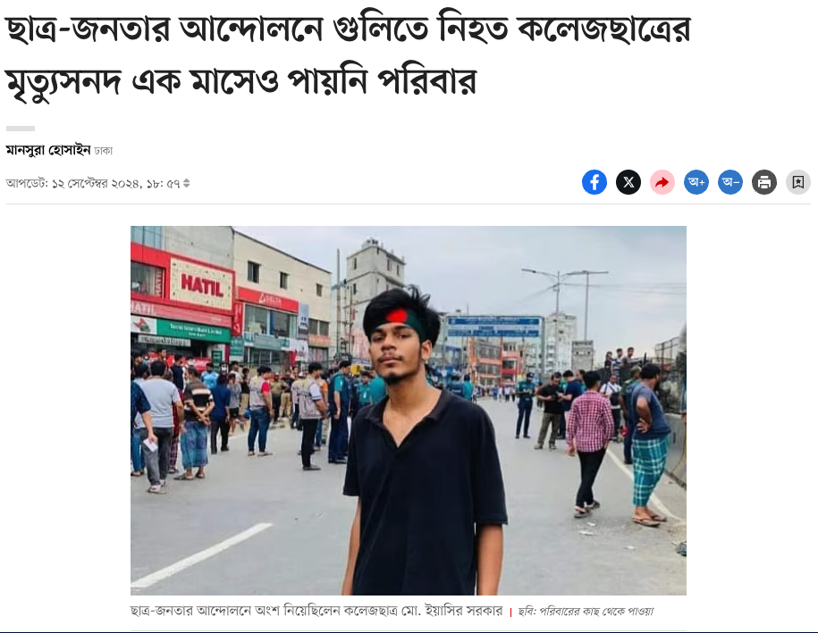
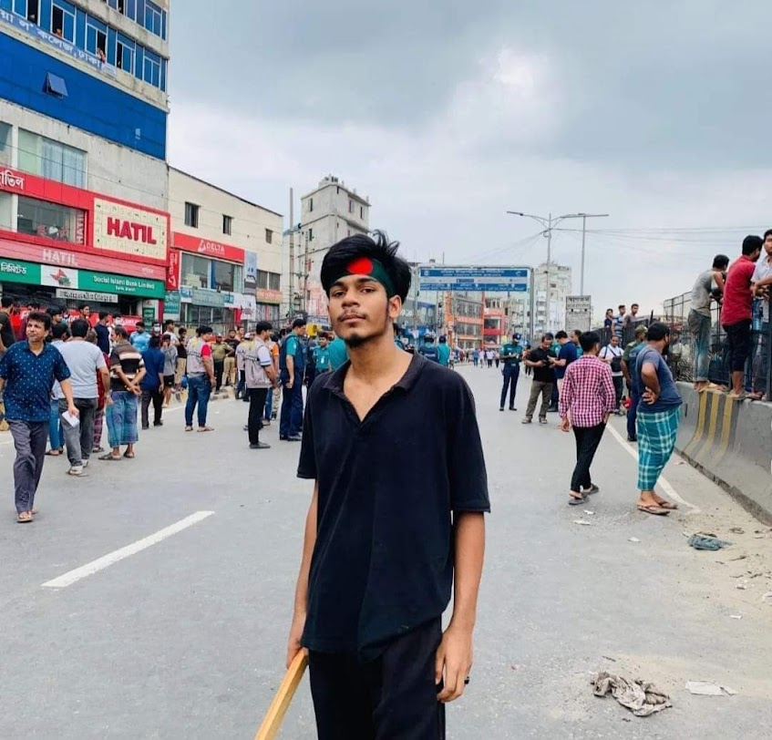
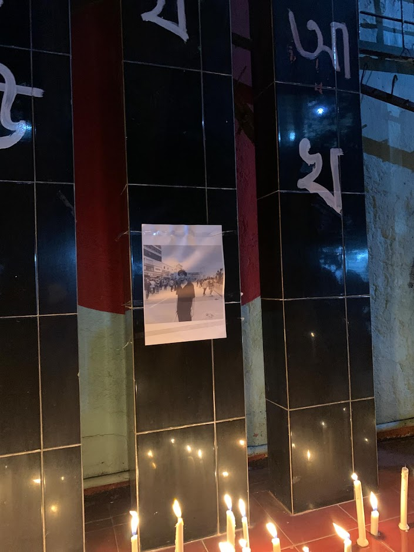
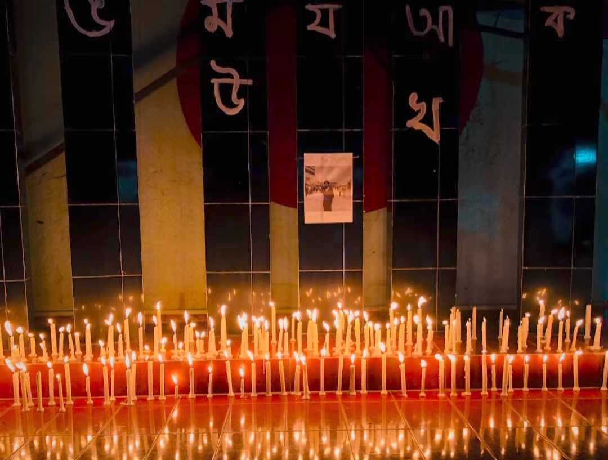
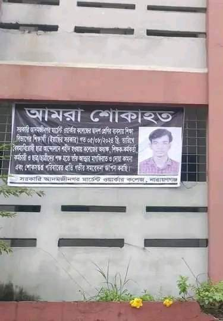
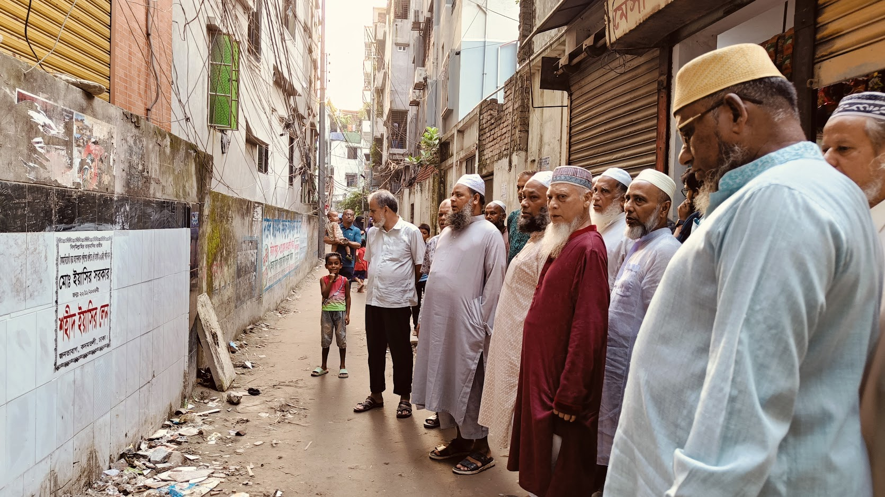
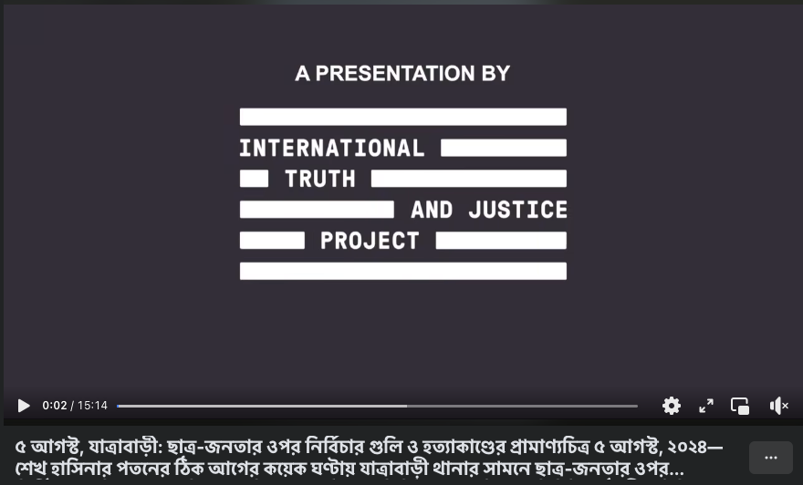
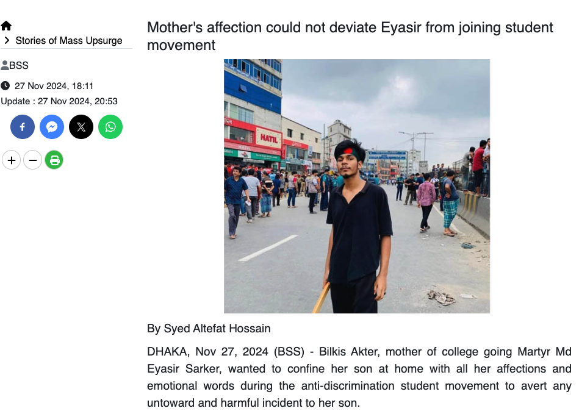
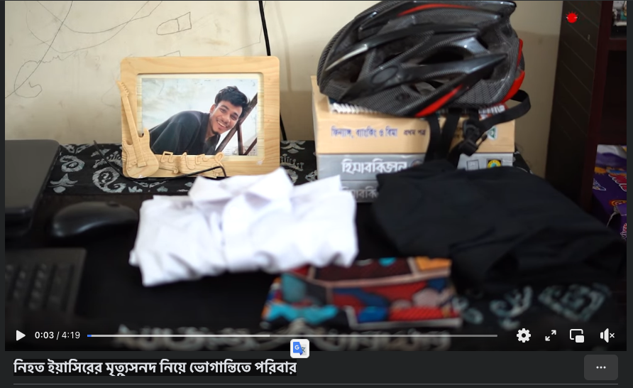

NEWS
ছাত্র-জনতার আন্দোলনে গুলিতে নিহত কলেজছাত্রের মৃত্যুসনদ এক মাসেও পায়নি পরিবার
Coverage of the hassle of getting death certificates for the victims of the protests
Prothomalo
Sept 12, 2024
November 20, 2006 - August 5, 2024

Born:
November 20, 2006
Birthplace:
Bangladesh
Died:
August 5, 2024
A young student activist who lost his life during the pro-democracy protests in Bangladesh. He was a second-year student at Govt MW College and stood up for democratic rights and fair elections.
MD Eyasir Sarker was a brave young activist who participated in the pro-democracy movement in Bangladesh. As a student of Govt MW College in his second year of studies in 2024, he represented the voice of educated youth seeking positive change in their country.
He received his early education from Bornomala Adorsho School before pursuing higher studies. Despite his young age, he showed remarkable courage and commitment to democratic values, believing in the power of peaceful protest to bring about meaningful change in society.
His participation in the protests demonstrated his unwavering commitment to democratic values and his belief in the right of the people to have fair and free elections. Like many young Bangladeshis, he was concerned about the future of democracy in his country and was willing to stand up for his beliefs.
2006
Born in Bangladesh
2018-2022
Studied at Barnamala Adarsha School and College
2024
Second-year student at Government Adamjee Nagar MW College
2024
Quota reform movement in Bangladesh
August 5, 2024
Lost his life during the protests in Dhaka
Dhaka, Bangladesh
Killed during protests
MD Eyasir Sarker lost his life during the mass protests in Dhaka on August 5, 2024. As a second-year student of Govt MW College, he was among the protesters who had gathered to demand fair elections and democratic reforms in Bangladesh. His death during one of the largest pro-democracy demonstrations in recent Bangladeshi history highlights the significant risks young activists face in their struggle for democratic rights.
Dhaka streets during the protests

Barnamala Adarsha School shohid minar

Barnamala Adarsha School shohid minar

Adamjee Nagar MW College


Coverage of the hassle of getting death certificates for the victims of the protests
Prothomalo
Sept 12, 2024
A documentary about the recent protests and Eyasir
Channel24
Sept 7, 2024

৫ আগস্ট, যাত্রাবাড়ী: ছাত্র-জনতার ওপর নির্বিচার গুলি ও হত্যাকাণ্ডের প্রামাণ্যচিত্র ৫ আগস্ট, ২০২৪—শেখ হাসিনার পতনের ঠিক আগের কয়েক ঘণ্টায় যাত্রাবাড়ী থানার সামনে ছাত্র-জনতার ওপর নির্বিচারে গুলি চালায় পুলিশ। সেদিন বেলা ১টা ৫৬ মিনিট থেকে ৩টা ৩০ মিনিট পর্যন্ত কী ঘটেছিল সেখানে, দীর্ঘ কয়েক মাসের বিশ্লেষণের পর সে ঘটনার একটি প্রামাণ্যচিত্র প্রকাশ করেছে আন্তর্জাতিক সংস্থা ইন্টারন্যাশনাল ট্রুথ অ্যান্ড জাস্টিস প্রজেক্ট, টেক গ্লোবাল ইনস্টিটিউট ও দ্য আউটসাইডার মুভি কোম্পানি। দেখুন ভিডিওতে…
International Truth and Justice Project
January 14, 2025

Eighteen-year-old Eyasir Sarker ignored his mother's heartfelt pleas to stay home and joined the student movement against...
BSSNews
Nov 27, 2024

৫ আগস্ট, যাত্রাবাড়ী: ছাত্র-জনতার ওপর নির্বিচার গুলি ও হত্যাকাণ্ডের প্রামাণ্যচিত্র ৫ আগস্ট, ২০২৪—শেখ হাসিনার পতনের ঠিক আগের কয়েক ঘণ্টায় যাত্রাবাড়ী থানার সামনে ছাত্র-জনতার ওপর নির্বিচারে গুলি চালায় পুলিশ। সেদিন বেলা ১টা ৫৬ মিনিট থেকে ৩টা ৩০ মিনিট পর্যন্ত কী ঘটেছিল সেখানে...
Prothomalo
Sept 18, 2024
৫ অগাস্টের বিজয় মিছিলকে ঠেকানো হয়েছে, গু-লি দিয়ে। সেই মিছিলেই নিহ-ত হোন ইয়াসির। সেই শোকে এখনও বাকরুদ্ধ পুরো পরিবার... প্রশ্ন কেবল, কী দোষ ছিলো ইয়াসিরের!?
Channel 24
Sept 7, 2024